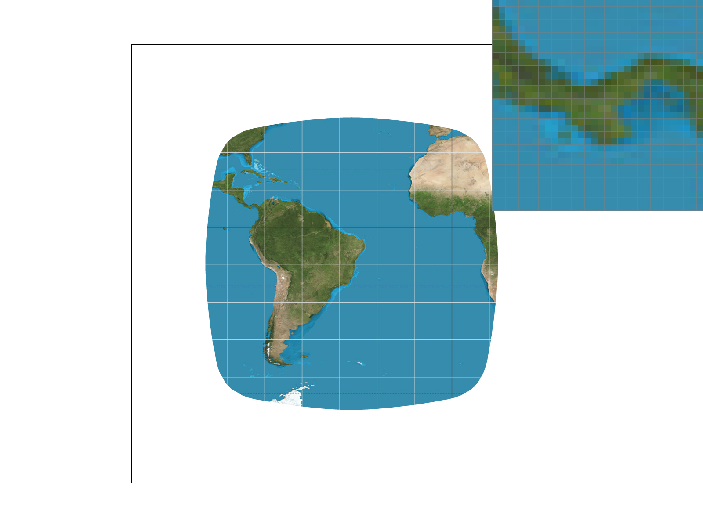
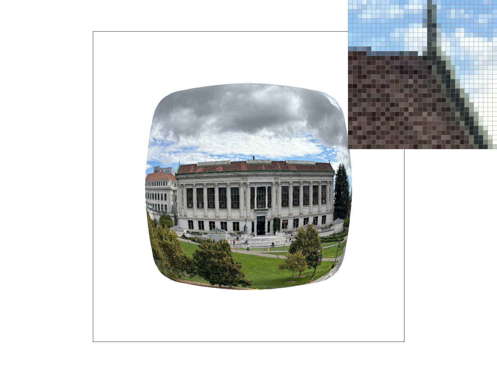
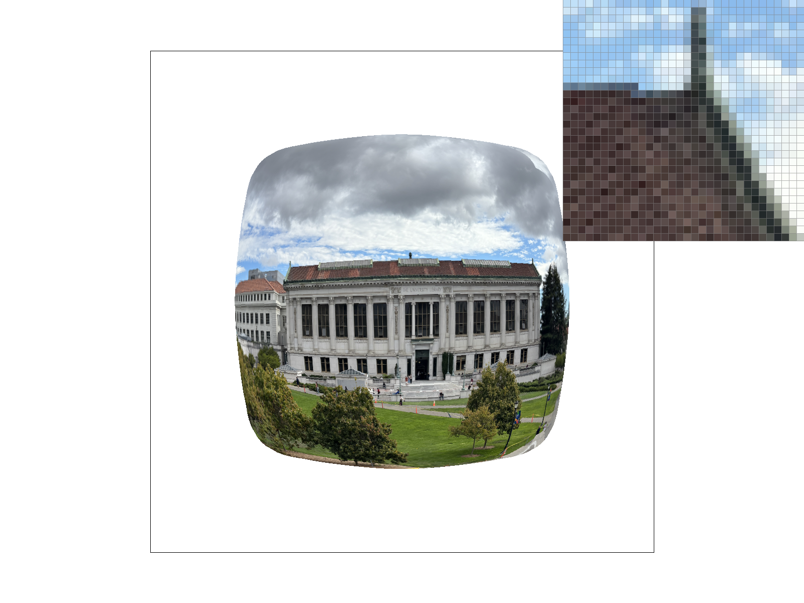

CS184/284A Spring 2026 Homework 1 Write-Up
Name: Brian Sui
Link to webpage: https://briansui.github.io/cs184/1/index.html
Link to GitHub repository: https://github.com/cal-cs184-student/hw1-rasterizer-bsui
Overview
In this project, I've implemented methods for rasterizing triangles and performing transformations. I've also implemented texture mapping through barycentric coordinates, as well as the antialiasing methods of supersampling, bilinear pixel sampling, and mipmap sampling. This project game me a greater appreciation for understanding different anatialiasing methods and their effects on the image. In particular, I enjoyed understanding how to implement level sampling since it is a dynamic approach to determining how to sample a pixel based on its relationship to the texture.Task 1: Drawing Single-Color Triangles
My algorithm to rasterize triangles finds the bounding box of the triangle by finding maximum and minimum x and y values on the vertices on the triangle. It also computes vectors normal to each of the edges (where each edge is the line between a pair of points), as well as the dot product between that normal vector another edge on the triangle. This dot product is taken to determine which side of the edge the third point of the triangle is on.The algorithm then iterates through each point in the bounding box, and fills the pixel if the point is on the "inside" side of each edge of the triangle. To determine the "inside" edge, I check for whether that point's dot product with the normal vector on the edge has the same sign as the previously computed dot product with a different edge. In other words, "inside" is the side of the edge of where the third point of the triangle is located, and we can determine if a point is on that side if its sign matches that of the precomputed dot product. If the dot product is 0, the point is on the edge, so we also fill in that pixel in that case.
My algorithm has runtime no worse than an algorithm that checks each sample within the bounding box, because my algorithm spends a constant amount of time checking each possible sample point within the bounding box of the triangle.

Task 2: Antialiasing by Supersampling
To implement supersampling, I first set up the sample buffer to be size sqrt(sample_rate) * (width, height). Then, I modified rasterize_triangle to work within the supersampled coordinate system by converting the input coordinates to the supersampled coordinate space, by multiplying each element by sqrt(sample_rate). Fill_pixel was adjusted to fill the sqrt(sample_rate) * sqrt(sample_rate) size square of elements in the sample buffer that correspond to the target pixel given in the input. When initializing a new sample buffer, I adjusted the size of the vector to be width * height * sample_rate instead of only width * height.When downsampling, I would first find the sqrt(sample_rate) * sqrt(sample_rate) size square in the sample buffer corresponding to each pixel in the rgb target buffer. Then, I would take the mean of all colors within that square, and write that color to the output.
Supersampling is useful to avoid jaggies in the images, especially on diagonal lines or curves. To implement it, the pipeline operated on a larger space for sampling, and downsampled to the output image size. For triangles, supersampling occurs during rasterization, which occurs in the larger buffer space.
Here are the results of supersampling on basic/test4. As the sample rate increased, the jagged edges became more blurry, making them appear less jagged and more like a smooth diagonal line.

|

|

|

|
Task 3: Transforms
I made the cube man wave its right hand by rotating its arm and changing its translation. I also added small square hands and small rectangular feet.
Task 4: Barycentric coordinates
Barycentric coordinates define coordinates with relation to how close they are to three other non-collinear points (ie: points that form a triangle). The closer a point is to a vertex on the triangle, the higher its weight, and vice versa. An example is shown below, where one vertex is red, one is green, and one is blue. Near the vertices, the colors are closer to the pure primary color, while as points move towards the center, a mixed color forms. This illustrates how near a veterx, a point has a high weight towards that vertex and a low weight towards the others, while near the center, the point as similarly sized weights towards each of the vertices.

Task 5: "Pixel sampling" for texture mapping
When converting discrete coordinates from one vector space to another, the continuous function used for the transformation will output continuous coordinates. For images, pixel values are at discrete values, both for the display and the texture, so a continuous coordinate in the texture space must be resolved in terms of discrete coordinates. Nearest neighbor sampling samples the nearest discrete coordinate, while bilinear interpolation interpolates between multiple nearby points.For nearest neighbor sampling, I simply round the real coordinates to the nearest integers. For bilinear sampling, I take the floor and ceiling of the coordinates to get the 4 discrete points enclosing the continuous point. I then query the colors at those 4 discrete points, and linearly combine the colors from those points, weighted inversely by how close the continuous point is to those points.
Here are images from the different sampling methods with different rates of supersampling. The image with no supersampling and nearest neighbor pixel sampling has visible aliasing, while the other three look similar and have little aliasing. This is likely due to the fact that both bilinear interpolation and supersampling are both antialiasing methods, and both combine results from nearby points, so they result in similar output.
|
|
|
|
|
 |
Task 6: "Level Sampling" with mipmaps for texture mapping
Level sampling is when pixel sampling is done at lower or higher mipmap levels. In the context of texture mapping, different parts of the texture may be sampled at different frequencies. For instance, a large part of a texture may be mapped to a small part of the image, which would lead to aliasing if sampled at the highest level. This can be fixed by sampling at an image level at a lower frequency.Level sampling without interpolation is relatively fast since it only requires a single memory access, compared to multiple accesses for interpolation or supersampling. However, it requires extra memory usage for storing additional levels, although this is only a constant factor. It is particularly good for antialiasing textures that scale an image at different points because lower frequency levels can be used for small scales and higher frequency levels can be used for larger scales. Since there are multiple levels, it is also able to antialias with different strengths based on the texture, meaning areas sampled at high frequency will not be blurred.
Changing sampling to bilinear sampling over nearest neighbor sampling requires sampling 4 texels instead of 1 per pixel on the image, but doesn't require extra space to store the texture. It has limited antialiasing power, since it only considers points in a 2 x 2 box. If the frequency sampled on the image differs from the frequency on the texture by a factor of more than 2, aliasing can still occur.
Supersampling requires no extra memory to store data, but requires sampling a larger number of pixels at runtime. It can have sufficient antialiasing power if enough pixels are sampled, but its runtime scales with supersampling power, and it can be difficult to determine if supersampling needs to be done with a larger or smaller factor in general.
Here are 4 combinations of pixel sampling methods and level sampling methods.
|
|
|
|
 |
 |
The texture is much larger than the output image, so aliasing occurs when sampling at level 0. This also occurs even when bilinear interpolation, since only points in a 2 x 2 region are considered. Aliasing is mostly removed from switching to nearest level sampling, and even more when combining this with bilinear interpolation. This can be seen on the roof of the library, and whether noise patterns occur on the zoomed in part of the roof.